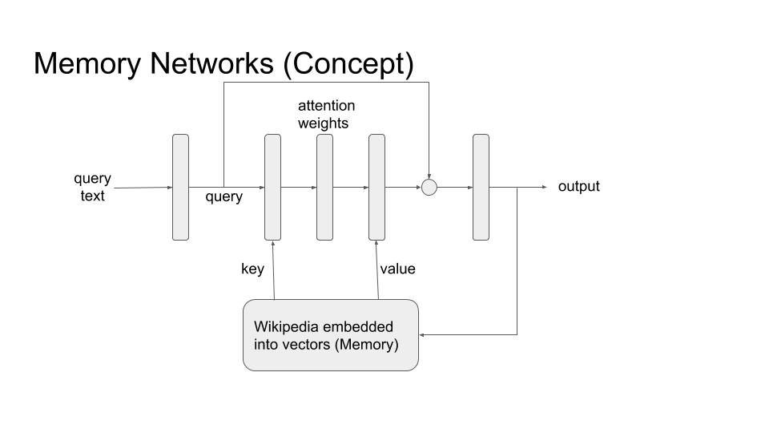

Chapter 13 Natural Language Generation
Author: Haris Jabbar
Supervisor: Matthias Aßenmacher
13.1 Introduction
Machine learning systems can be differentiated into two types: Discriminative and Generative. While discriminative systems like classification, regression, clustering are the more well known type, it’s the Generative systems that hold greater promise of achieving Artificial General Intelligence. In essence, a Generative system is expected to produce images, text or audio that would be meaningful to the users. Generating a picture of a horse is a much harder problem than just identifying whether there is a horse in the picture.
In this chapter, I will tackle the generative processes in NLP. Understandably, the field is called Natural Language Generation (NLG).
13.2 Definition and Taxonomy
Reiter and Dale (2000) defined Natural Language Generation (NLG) as “the sub-field of artificial intelligence and computational linguistics that is concerned with the construction of computer systems than can produce understandable texts in English or other human languages from some underlying non-linguistic representation of information”.
Two aspects need to be highlighted. First is generation of understandable text in a human language and second is the input to such a generation system is ‘non linguistic’ representation of information. For our purposes, we will drop the second requirement; which means that the source can be text as well. With such a definition in mind, we can have following taxonomy of NLG systems :
- Text-to-Text
- Machine Translation : Automatically translating between various human languages
- Text Summarization : Summarizing a (big) text document into a shorter summary/abstract.
- Data-to-Text
- Image Captioning : Describe the image in a short sentence.
- Business Intelligence : Creating text summaries of data from conventional databases (e.g SQL)
- Ideas-to-Text
- Poetry/Song Generation : Generating a song from a few keywords or mimicking the style of a certain artist.
- Fake News : Automatically generating news items that look credible but are not.
- Dialog Systems (Chatbots)
- Goal Oriented : Chatting with a computer system (agent) with a specific purpose (e.g. booking a flight)
- Open ended conversations : When the conversation with the agent is casual chit-chat but has the components of information, emotion and human like empathy.

NLG Use Cases
13.3 Common Architectures
There are many architectures that are common across most of above mentioned NLG systems. While some are used in other NLP domains as well, in the following sections I will explain them with a focus on language generation.
13.3.1 Encoder-Decoder Architecture
The most ubiquitous architecture for NLG is the encoder-decoder architecture, and especially the decoder part of it. Hence I will explain it in some detail. The architecture is shown in the following figures:

Encoder-Decoder (Training)

Encoder-Decoder (Inference)
The architecture can be seen as conditional probability P(y/x) with ‘y’ being the output of the decoder and it is conditioned on ‘x’ (the output of the encoder). Hence the NLG task becomes generating text through decoder conditioned on some input, coming from the encoder.
13.3.1.1 Encoder :
As stated above, the purpose of this part of the network is to provide conditional information on which the decoder generates text. As such, this part can have ANY architecture that provides some form of embedding of the input. It can be a convolutional neural network to condition the generated text on some properties of an image (for example image captioning), or RNN/LSTM/Transformer architecture for text or audio based conditioning; or even a simple feed forward network to condition it on SQL database for example. For the purpose of illustration we will be using an RNN/LSTM with text as input condition (as shown in the figure).
The thing to note here is that the richer the feature vector going from encoder to decoder, the more information decoder would have to generate better output. This was the motivation to move from single feature vector (\cite) to multiple vectors (\cite) and to attention based models (\cite). This trend finally led to the transformer based models.
13.3.1.2 Decoder :
The decoder is the most distinctive part of an NLG system. Almost all decoders have the same form as shown in the figures above. The purpose is to generate text tokens (\cite) one after the other until a terminating criteria is met. This termination is usually a termination token (<end> in the figures) or a max length criteria.
During training, we are given an input (text/image/audio) and the ‘gold label text’ that we want the system to learn to generate for that particular input. In the given example, the input is the text “How are you?” and the gold label is “I am good”. The input goes through the encoder and produces a feature vector that is used as the input to decoder. The decoder then generates tokens one by one and the loss is calculated after the softmax layer from the generated token and the gold label token. Note the inclusion of an extra token ‘<null>’ as the first token. The last token of the gold label should produce the ‘<end>’ token.
During inference, we don’t have the gold label, so the output of one step is used as input to next step, as shown in the figure. Note that it matches with the setup during training. The generator stops when ‘<end>’ token is emitted; thus completing the inference.
13.3.2 Attention Architecture
The attention architecture is introduced in detail in section (\cite). Here I will briefly mention its use in NLG systems. Looking at the picture below, we can see that the attention is from decoder to encoder.

Encoder-Decoder (Attention)
In other words, before generating each token, the decoder attends to all tokens in the encoder, as shown. The query is the decoder token and key/values are all encoder token. That way the decoder has much richer information to base its output on.
13.3.3 Decoding Algorithm at Inference
Now I will explain the decoding algorithms that are used to generate text from the softmax layer.
As explained above, during inference, the tokens are generated sequentially. In a vanilla version of decoding, at each step of the sequence, the token with highest probability in the softmax layer is generated. This is called ‘greedy decoding’, but it has been shown to produce suboptimal text. There are few improvements over this greedy approach.
13.3.3.1 Beam Search
In greedy decoder we simply output the maximum probability token at each step. But if we track multiple words at each step and then output the sequence formed by highest probability combination, we get beam search. The number of tokens we keep track of is the length of beam (k). The algorithm then goes as follows:
- Select k-tokens with highest probability at step 1.
- Use these k-tokens to generate k softmax vectors at step 2.
- Keep the k highest scoring combinations.
- Repeat steps 2 and 3 till <end> token is generated, or a predefined max is reached
- At each step, we have only k-hypothesis, which is the length of beam search.
While beam search tends to improve the quality of generated output, it has its own issues. Chiefly among them is that it tends to produce shorter sequences. Although it can be controlled by the max parameter (of step 4), it’s another hyperparameter to be reckoned with.
13.3.3.2 Pure Sampling Decoder
Here, at each step, instead of taking the token with maximum probability like in greedy search, the token is sampled from the whole vocabulary according to the probability distribution predicted by the softmax layer.
13.3.3.3 K-sampling Decoder
It’s like pure sampling decoder, but instead of sampling from whole vocabulary, the token is sampled only from the k-highest probability tokens.
13.3.4 Memory Networks
Memory Networks is another architecture that is potentially quite useful in language generation tasks. The basic premise is that LSTMs/RNNs and even Transformer architecture stores all the information only in the weights of the network. When we want to generate text that should include information from a large knowledge base, this ‘storage’ of network weights is insufficient. Memory networks resolve this problem by employing an external storage (the memory) that it can use during language generation. Conceptual diagram is showing in the following figure, followed by a brief description.
 Memory (M) in this context can be any database that can be queried by the network. Usually it is of the form of key-value pairs or a simple array of vectors embedding a corpus of knowledge (eg DBPedia/wikipedia). For any query input (x), first we get an embedding. This is then used to attend over the memory M in the usual attention mechanism. The output is the weighted sum of memory that incorporates information from complete knowledge corpus. In some cases the output can also be used to update the memory database.
13.3.5 Language Models
Language models are probably the most important ingredient of generating text. As the name implies, they model the probability distribution of generating words and characters. More concretely, they model the conditional probability distribution P(w_t/w_{t-1}). Thus with a given input vector coming from a source (image/database/text), this model can be used to generate words one after the other.
13.4 Question-Answer Systems
The question-answer systems attempt to extract or generate answers from a given question and either a fixed or open ended context. The context here is the corpus from which the answer needs to be generated. For example in SQUAD dataset (\cite) the context is a given paragraph from wikipedia and the question is asked from that paragraph. In open ended contexts, the whole wikipedia (or other corpus) can be the contexts.
13.4.1 Datasets
- msmarco
- google natural questions
- multiple choice
- swag/trivia qa
- conversational qa
- coqa, wizard of wikipedia, quac.ai
- many others e.g. visual qa, KB qa etc.
13.4.2 Types
- Question Answer Systems
- Structured knowledge source The sources can be e.g. Freebase, Wikidata, DBpedia or RDBMS systems
- Unstructured knowledge soure Free text e.g. Wikipedia
- FAQs Extract answers for similar questions to the given in a corpus of question-answer pairs.
13.4.3 Architectures
- Context
- Question
Five conceptual levels - Token level features (embeddings) - Context and question encoder - Attention from context to question or vice versa - Modeling layer - Output layer
Pointer Networks
- Open Domain QA
- DrQA
- Distant Supervision
13.4.4 Evaluation Metrics
There are generally two metrics commonly used in QA systems. The exact match (EM) and F1 score.
13.5 Dialog Systems
These are the systems where an agent chats with a human being either with a specific purpose (goal oriented) or it is a general open ended chat. The examples of goal oriented chats include tasks like booking an appointment or a flight ticket. Open ended chats can be talking about a general topic which may or may not include a ‘personality’ for the chatbot.
13.5.1 Types
- Chatbots
- Open domain
- Goal Oriented
13.5.2 Architectures
- Information Retrieval
- Inbuilt in the model weights
- External Source
- Memory Networks
- API calls (?)
- Text Generation
- Encoder-Decoder
13.6 Conclusion
Natural Language Generation (NLG) has huge potential to be not only an academic domain for research but to affect and improve our daily lives. In this chapter I have talked about only two of its manifestations.